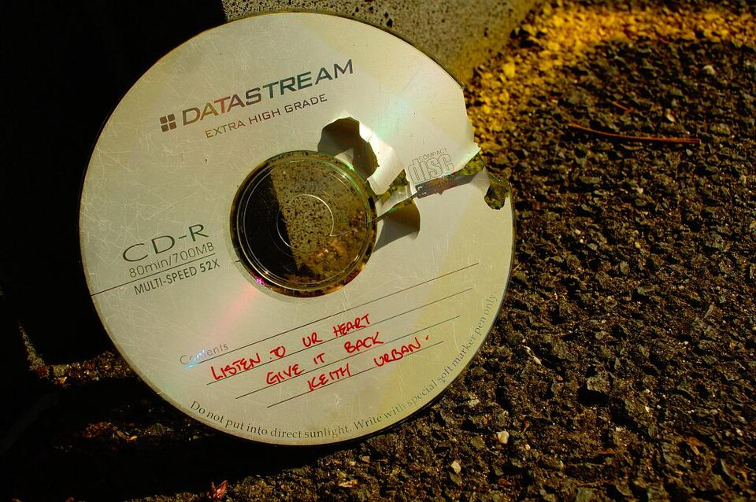
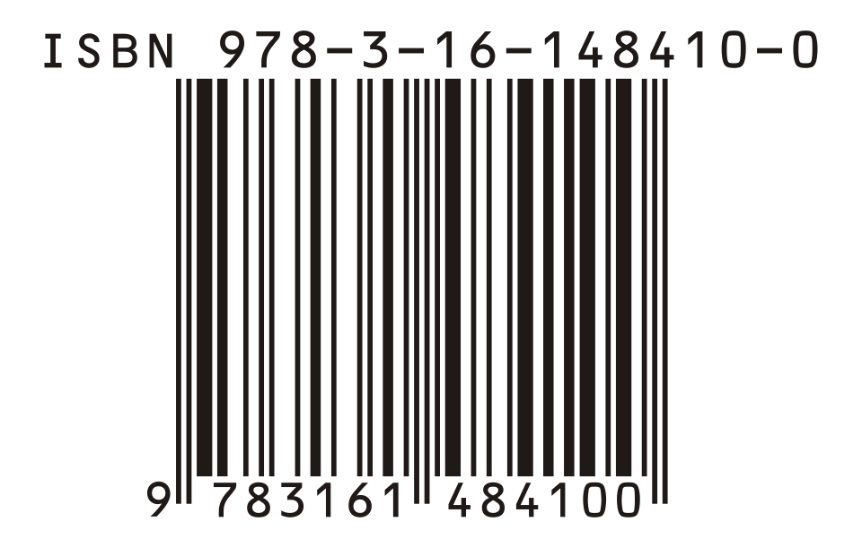

Sarahhax2210
Sarahhax2210
Good morning!
Nur das Schöne wird die Welt retten!
Fjodor Dostojewski
Nicht verzagen, Doc Alvers fragen!
Informatik — Grundkurs 11
Fehler erkennen
Paritätsbit, Hamming-Distanz und die Prüfziffern auf Buch, Barcode und Konto
Nicht verzagen, Doc Alvers fragen!
Kapitel 01
Das Prüfbit
Parität und ihre Grenzen

Nicht verzagen, Doc Alvers fragen!
Wo wir stehen
Letzte Woche: Redundanz entfernen — Lauflänge, Huffman, JPEG
Heute umgekehrt: Redundanz gezielt hinzufügen
Unterwegs kippen Bits, beim Abtippen passieren Dreher
Leitfrage: Wie merkt der Empfänger einen Fehler — ohne das Original zu kennen?
Nicht verzagen, Doc Alvers fragen!
Das Prüfbit
Ein Prüfbit ist ein zusätzliches Bit ohne Nutzinformation
Es macht bestimmte Übertragungsfehler erkennbar
Gerade Parität: Das Prüfbit wird so gesetzt, dass die Anzahl der Einsen — Prüfbit mitgezählt — gerade ist
Bei ungerader Parität ist es umgekehrt — beide sind gleich leistungsfähig
Erkennen ist nicht Korrigieren: Man weiß, dass ein Fehler da ist, nicht wo
Nicht verzagen, Doc Alvers fragen!
Prüfbit bei gerader Parität
| Datenbits | Anzahl Einsen | Prüfbit | gesendet |
|---|---|---|---|
| 1011 | 3 — ungerade | 1 | 10111 |
| 1100 | 2 — gerade | 0 | 11000 |
| 1000001 (ASCII A) | 2 — gerade | 0 | 10000010 |
| 0111 | 3 — ungerade | 1 | 01111 |
Der Empfänger zählt die Einsen: ungerade Anzahl heißt Fehler
Nicht verzagen, Doc Alvers fragen!
Was die Parität übersieht
| gesendet 10111, empfangen | Anzahl Einsen | Parität | Ergebnis |
|---|---|---|---|
| 10111 | 4 | gerade | in Ordnung |
| 10011 (1 Bit gekippt) | 3 | ungerade | Fehler erkannt |
| 11011 (2 Bits gekippt) | 4 | gerade | Fehler NICHT erkannt |
| 01011 (3 Bits gekippt) | 3 | ungerade | Fehler erkannt |
Eine gerade Anzahl gekippter Bits bleibt unentdeckt — ein einzelner Fehler wird immer erkannt
Nicht verzagen, Doc Alvers fragen!
Der Kartentrick
Jemand legt 5 × 5 Karten zufällig, schwarz oder weiß nach oben
Ihr ergänzt eine Zeile und eine Spalte, sodass jede Zeile und Spalte gerade viele schwarze Karten hat
Ihr dreht euch um — jemand wendet eine Karte
Genau eine Zeile und eine Spalte sind jetzt ungerade: Sie kreuzen sich an der gewendeten Karte
Aus Erkennen wird Korrigieren — mit mehr Prüfbits
Nicht verzagen, Doc Alvers fragen!
Kapitel 02
Abstand und Korrektur
Hamming-Distanz, Bündelfehler, CD

Nicht verzagen, Doc Alvers fragen!
Erkennen oder korrigieren?
Erkennung meldet den Fehler — Korrektur stellt die richtigen Daten wieder her
Korrektur braucht deutlich mehr Redundanz
Erkennen genügt, wenn neu gesendet werden kann — wie im Netz
Bei einer CD geht das nicht: Sie muss sich selbst helfen
Der Preis jedes Schutzes: zusätzliche Bits ohne Nutzinformation — je mehr Schutz, desto mehr
Nicht verzagen, Doc Alvers fragen!
Die Hamming-Distanz
| Codewort 1 | Codewort 2 | verschieden an Stelle | Distanz |
|---|---|---|---|
| 1011 | 1001 | 3 | 1 |
| 1100 | 1010 | 2 und 3 | 2 |
| 10111 | 11011 | 2 und 3 | 2 |
| 0000 | 1111 | 1, 2, 3 und 4 | 4 |
Hamming-Distanz: Anzahl der Stellen, in denen sich zwei gleich lange Codewörter unterscheiden
Die kleinste Distanz im Code bestimmt, was er leisten kann
Nicht verzagen, Doc Alvers fragen!
Was die Mindestdistanz verrät
Bei Mindestdistanz erkennt ein Code bis zu Fehler
Korrigieren kann er bis zu Fehler (abgerundet)
Paritätsbit: — einen Fehler erkennen, keinen korrigieren
: zwei Fehler erkennen, einen korrigieren
Beispiel: Aus 0 wird 000, aus 1 wird 111 — empfangen 010, am nächsten liegt 000
Nicht verzagen, Doc Alvers fragen!
Bündelfehler und CRC
Bündelfehler: mehrere aufeinanderfolgende Bits gestört — durch Kratzer oder Störimpulse
Ein einfaches Paritätsbit versagt dabei
CRC (zyklische Redundanzprüfung): eine Prüfsumme über eine Bitfolge, berechnet durch Polynomdivision
CRC erkennt auch Bündelfehler zuverlässig — Standard in Netzwerken und auf Speichermedien
Nicht verzagen, Doc Alvers fragen!
Wie die CD Kratzer übersteht
Die CD speichert fehlerkorrigierende Codes zusätzlich zur Musik
Die Daten eines Blocks werden über die Oberfläche verteilt — das heißt Interleaving
Ein Kratzer trifft dann nur kleine Teile vieler Blöcke statt eines Blocks ganz
Diese kleinen Lücken kann die Korrektur rekonstruieren — die Musik spielt weiter
Nicht verzagen, Doc Alvers fragen!
Kapitel 03
Prüfziffern
Buch, Barcode, Konto

Nicht verzagen, Doc Alvers fragen!
Wozu eine Prüfziffer?
Eine Prüfziffer wird aus den übrigen Ziffern berechnet und hinten angehängt
Passt sie nicht, war die Eingabe fehlerhaft — Tippfehler fallen sofort auf
Der häufigste Tippfehler ist der Zahlendreher: 81 statt 18
Mit gleicher Gewichtung, etwa der Quersumme, fiele ein Tausch nie auf
Deshalb gehen die Ziffern mit unterschiedlichen Gewichten in die Rechnung ein
Nicht verzagen, Doc Alvers fragen!
EAN-13 nachrechnen
| Stelle | 1 | 2 | 3 | 4 | 5 | 6 | 7 | 8 | 9 | 10 | 11 | 12 |
|---|---|---|---|---|---|---|---|---|---|---|---|---|
| Ziffer | 4 | 0 | 0 | 6 | 3 | 8 | 1 | 3 | 3 | 3 | 9 | 3 |
| Gewicht | 1 | 3 | 1 | 3 | 1 | 3 | 1 | 3 | 1 | 3 | 1 | 3 |
| Produkt | 4 | 0 | 0 | 18 | 3 | 24 | 1 | 9 | 3 | 9 | 9 | 9 |
Summe: 89 — bis zur nächsten Zehnerzahl 90 fehlt 1: Die Prüfziffer ist 1, die EAN lautet 4006381333931
Die ISBN-13 rechnet genauso: 978-3-16-148410-0 hat die Summe 100 — schon durch 10 teilbar
Nicht verzagen, Doc Alvers fragen!
Warum der Zahlendreher auffällt
Gewichte abwechselnd 1 und 3 — die Summe aller 13 Ziffern muss durch 10 teilbar sein
Vertauscht man zwei Nachbarn und , ändert sich die Summe um
Beispiel: 4006381333931 wird zu 4006318333931 — Summe 76 statt 90, erkannt
Lücke: Nachbarn, die sich um 5 unterscheiden (etwa 1 und 6), ändern die Summe um 10 — unentdeckt
Der Scanner an der Kasse prüft sofort — passt die Ziffer nicht, piept er nicht
Nicht verzagen, Doc Alvers fragen!
Die IBAN prüfen
| Schritt | am Beispiel DE89 3704 0044 0532 0130 00 |
|---|---|
| 1. Land und Prüfziffern nach hinten | 370400440532013000 DE89 |
| 2. Buchstaben in Zahlen: A = 10, B = 11 | D = 13, E = 14: 370400440532013000131489 |
| 3. durch 97 teilen | Rest 1 — die IBAN ist gültig |
Die zwei Prüfziffern machen Fehler in Land, Bankleitzahl und Kontonummer erkennbar
Beim Modulo-97-Verfahren fallen fast alle Tippfehler und Dreher auf
Nicht verzagen, Doc Alvers fragen!
Schutz gegen Versehen, nicht gegen Absicht
Der Luhn-Algorithmus prüft Kreditkarten- und ähnliche Nummern auf Eingabefehler
Über Echtheit oder Deckung sagt er nichts
Jedes Prüfziffernverfahren ist öffentlich — jeder kann eine passende Nummer erzeugen
Gegen Fälschung braucht es digitale Signaturen
Reihenfolge beim Empfang: erst Prüfsumme vergleichen, dann die Daten verwenden
Nicht verzagen, Doc Alvers fragen!
Prüfbits und Prüfziffern sind gezielte Redundanz: Sie machen Fehler erkennbar, mit genug Abstand zwischen den Codewörtern sogar korrigierbar — aber sie schützen vor Versehen, nicht vor Fälschung.
Merksatz
Nicht verzagen, Doc Alvers fragen!
Fun Facts
Richard Hamming ärgerte sich, dass sein Relaisrechner bei Fehlern nur abbrach — 1950 veröffentlichte er die Hamming-Codes
Die Luhn-Formel stammt von Hans Peter Luhn aus Barmen, heute Wuppertal — er arbeitete bei IBM
Die alte ISBN-10 kannte als Prüfziffer auch ein X — es steht für 10
Ein QR-Code bleibt auf der höchsten Stufe lesbar, selbst wenn rund 30 Prozent fehlen
Nicht verzagen, Doc Alvers fragen!
Eure Aufgabe
Barcode-Detektive: drei EANs von Verpackungen oder Büchern mit dem Taschenrechner nachrechnen
Partnerübung: Eine schreibt eine EAN mit Tippfehler oder Dreher ab, der andere findet ihn per Prüfziffer
Fehlersuche-Spiel: 4-Bit-Nachrichten mit Paritätsbit senden — der Sender kippt heimlich ein oder zwei Bits
Kartentrick: 5 × 5 Karten mit Paritätszeile und -spalte — findet die gewendete Karte
Zum Schluss: Aufgaben (20) auf der Planseite — Lösung pro Aufgabe zum Aufklappen
Nicht verzagen, Doc Alvers fragen!